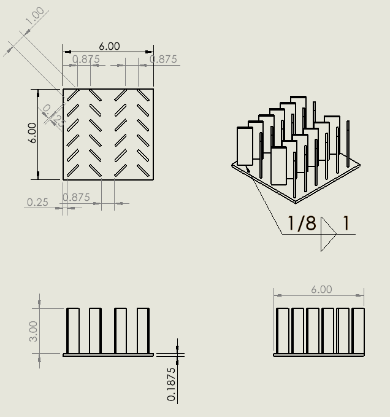

I am a Mechanical Engineering Student with a strong foundation in heat transfer, fluid mechanics, and machine design. Set to graduate in May 2026. Proficient in engineering softwares such as Solidworks, MATLAB, and Microsoft Excel. Yearning to apply technical knowledge and skills in an engineering environment.
Participating on the Baja SAE competition team. The team's goal is to design and build a buggy to compete against other univerisities. My part of the work is designing the rear suspension using dynamics, stress, strength, and fatigue analyses. This project is still in progress and will end in May 2026.

Researched and experimented on the efficiency of the use of staggered plate heat sinks instead of the regular heat sinks. Collected data using self-made sensors with Arduino and analyzed the data using knowledge on Heat Transfer.
Associate of Science in Engineering, Graduated: December 2023
Bachelor of Science in Mechanical Engineering, Expected Graduation: May 2026
Worked in a fish processing plant, handling and processing fish and fish products. This is a fast paced job with 16 hour shifts, 7 days a week. Worked from June 2026 to July 2026.
Sunrise Farms Inc.
Heavy labor job doing crop maintenane tasks, such as thinning, weeding, and cleaning crops.